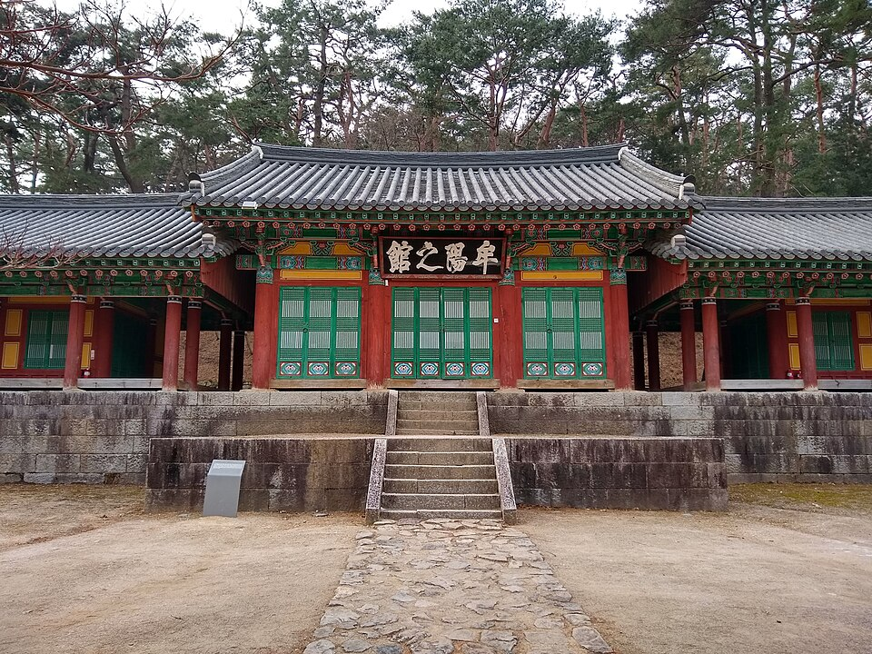

지역·대상별
고창 검정고시 — 50대에 다시 잡는 연필, 만학도 공부법

자녀를 다 키우고 나서, 또는 일을 조금 줄이고 나서 “이제는 내 학력을 마무리하고 싶다”는 마음으로 고창 검정고시 과외를 찾는 분들이 계세요. 가장 자주 하시는 말씀은 “머리가 예전 같지 않다”입니다. 그런데 만학도의 공부는 젊을 때와 방법이 달라야지, 못 하는 게 아니에요.
첫 두 주는 ‘시작하는 습관’만 만듭니다
20년, 30년 만에 책을 펴면 30분도 앉아 있기가 힘듭니다. 그래서 처음부터 진도를 나가지 않아요. 매일 같은 시간에 20분 책상에 앉는 것만 2주 동안 목표로 잡습니다. 분량은 적어도 좋습니다. 이 2주가 지나면 “앉으면 공부가 시작되는” 상태가 만들어지고, 그다음부터 진도가 훨씬 빨리 나갑니다.
외워지지 않을 때 쓰는 방법
- 눈으로 읽지 말고 손으로 씁니다 — 같은 내용을 소리 내어 읽고 한 번 써 보면 훨씬 오래 남습니다.
- 하루 뒤, 사흘 뒤 다시 봅니다 — 오래 붙잡는 것보다 짧게 여러 번 만나는 쪽이 기억에 낫습니다.
- 아는 것에 붙여서 외웁니다 — 살면서 겪은 일·뉴스에서 들은 이야기에 연결하면 한국사·사회는 특히 쉽게 붙습니다. 이건 오히려 나이가 있는 분이 유리한 부분이에요.
한 번에 다 하려 하지 않아도 됩니다
검정고시는 전 과목 평균 60점 이상이면 합격이고, 평균에 못 미쳐도 60점을 넘긴 과목은 과목 합격으로 인정받아 다음 시험에서 다시 보지 않아도 됩니다. 즉 한 번에 모든 과목을 끝내야 하는 시험이 아니에요. 부담이 큰 수학·영어는 뒤로 미루고, 먼저 잡히는 과목부터 합격을 쌓아 가는 방식이 만학도에게는 특히 잘 맞습니다.
고창에서 이렇게 함께합니다
고창 검정고시를 준비하면서 “학원에 가면 나만 나이가 많을 것 같다”는 걱정 때문에 미루셨다면, 저희는 1:1 맞춤 과외라 그런 부담이 없습니다. 지금 어디까지 알고 계신지부터 편하게 확인하고, 화상(줌) 수업이나 방문 수업 중 편한 방식으로 시간을 맞춰 드려요. 글씨 크기가 큰 교재, 진도보다 이해를 우선하는 속도처럼 세세한 부분도 맞춥니다.
늦게 시작한 게 불리한 시험이 아닙니다. 지금 사정과 목표만 알려주시면, 어느 과목부터 어떤 속도로 갈지 무료로 잡아 드립니다. 시험 일정은 뉴스 첫 화면의 일정 안내를 확인해 주세요.